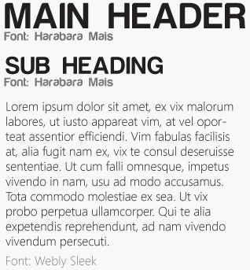

Uncommon Knowledge is a creative service where young creatives, professionals and students can use our inspiring and knowledgable books and workshops to boost their brains and enlighten them with our masterly wisdom that has been collected over 30 years of working in the design and web industry as well as teaching all over the world.
Chris Murphy is a designer, writer, public speaker and educator amongst other things based in the heart of Belfast, Northern Ireland. He is a very successful business entrepreneur who has created this brand Uncommon Knowledge so he can spread his knowledge and wisdom which will allow the industry to expand and let creatives excell and grow in their feild of expertise.
He is a world class writer and has written and co-written many books such as HTML and CSS Web Standard Solutions, The Craft of Words- Part One and Two, and continues to write articles for top magazines and blogs such as .Net.
As well as being a passionate writer he also benefits himself by being a conference speaker and has spoken at many resepected design conferences around the world including Build Belfast and Brooklyn Beta in NYC and many more!
He has also been describes as a "William Morris of the digital age." - Creative Review.
- Should be used within the brand when not assosiated with the book series.
- Should be shown clearly at an appropriate size for the branded item.
- When used in a letter head should be placed on the top left corner of the page at a size of 100x100px.
- Should only be shown on a white background.
- Should only be used in relation to the book series.
- Should be placed on the top left corner of each book cover to clearly indicate the brand.
- When used on a business card it should be the only subject on that particular side of the branded item.
- The coloured logo should only be used on top of the lighter shade of the same colour or white.
___________________________________________________________________________________________________________________________________
Alter our logo in anyway.(change shape, colour type).
Use our logo in any way that will effect the reputation of the brand.
Place the logo so that it can not be recognised easily.
An alternative logo can be used instead of the standard logo. It may be used on a website or on official documents if nessessary.
- Only the light and dark shade of the same colour should be used together.
- Never mix two different colours together.
- The colour pallete should only be used in connection with the series of book covers the same as the coloured logo.
- This strong vibrant colour pallete represents a creative audience and attracts an audience of all ages.
- Black and white should be used an a neautral colour for the brand if the series of books are not related.
- Only to be used with a white background so that they stand out to their full potential.
- Maximum size each icon should appear at is 100x100px.
- minimum size each icon should appear at is 25x25px.
- Icons by used throughout the brand on a website or books to display information easier to the audience.
We have used a sans-serif font to keep it modern and fresh which is simple and easy for the user to read.
- Text can only be used in black and white.
